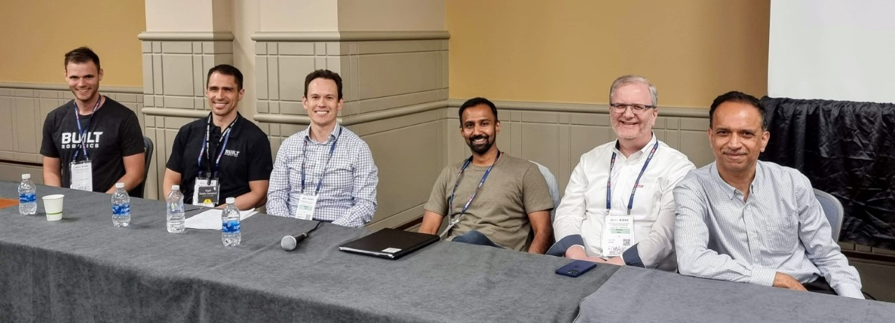
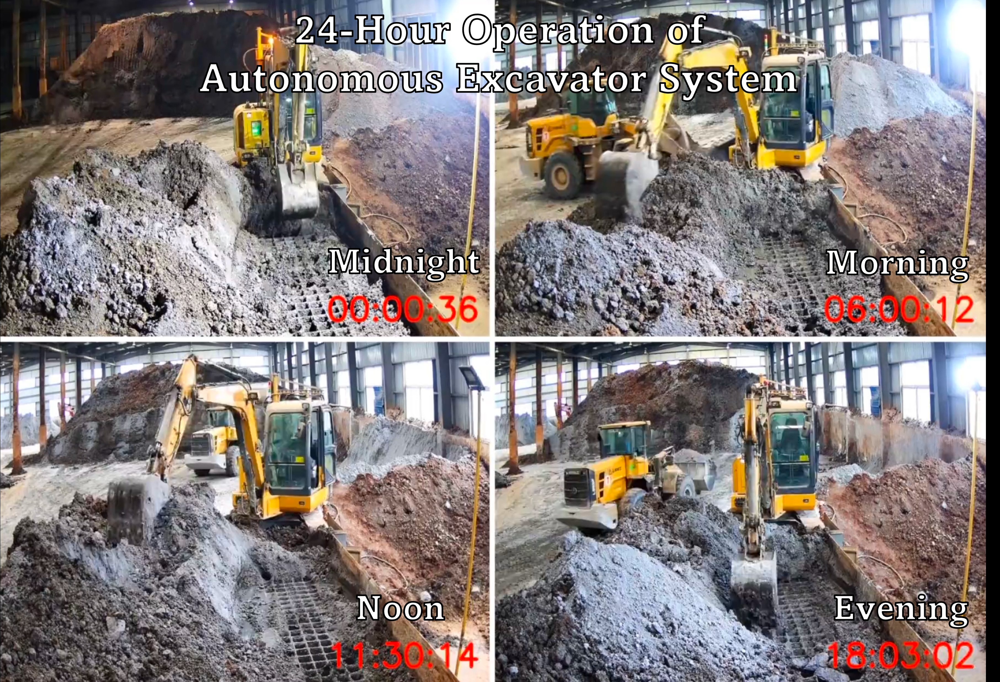
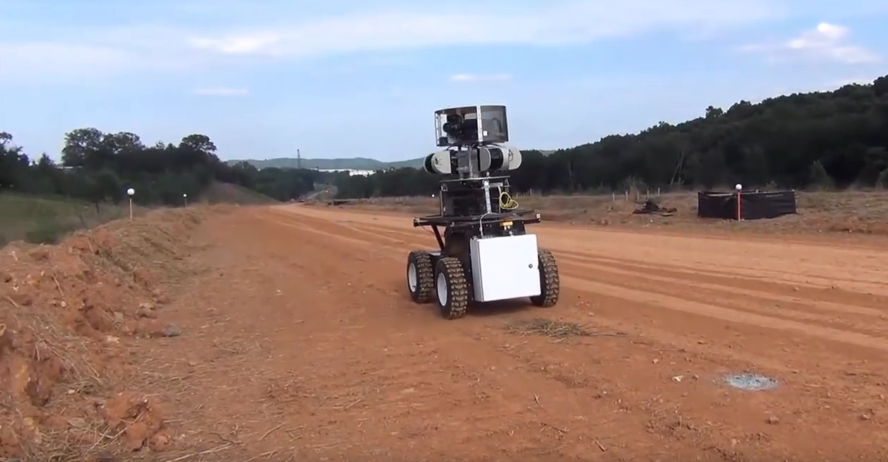

The $10 trillion global construction industry has traditionally been a labor-intensive industry, yet it stands to benefit from autonomous robots that promise to deliver construction work that is more accurate and efficient compared to manual or conventional methods. However, the integration of automation and robotic technology into the construction workplace is faced with significant barriers including high cost of entry, safety concerns, inadequate training and knowledge about robotics, and poor performance of robots in dynamic, cluttered and unpredictable environments such as construction sites.
To tackle these challenging issues, this workshop aims to facilitate discussion on technology that will enable advanced robotics for future construction workplaces with an emphasis on robust perception and navigation methods, learning-based task and motion planning, and safety-focused robot-worker interactions. In line with the ICRA 2023 Embracing the Future: Making Robots for Humans theme, this workshop will provide a venue for academics and industry practitioners to create a vision for robotics in construction work and ensure equitable participation in planning for the future of construction workplaces. The full-day workshop will feature presentations by distinguished speakers from both industry and academia as well as interactive activities in the form of a SLAM challenge, poster sessions, debate, and panel discussions
The workshop will be held mainly as an in-person event, though the session will be live-streamed through the InfoVaya Conference App. In-person ICRA attendees who would like to participate in the workshop will be required to register for ICRA with the workshop access option. Remote participants are required to pay the virtual registration fee to get access to the livestream feed. More details about the registration fees are available on the ICRA website.This workshop will solicit contributions in two tracks: (i) the Paper Track and (ii) the Poster-only Track.
Paper Track: This track consists of contributed papers that constitute novel, original research in construction robotics or closely related fields. Contributed papers cannot take the form of an existing paper that is published or under review. Contributed papers should be in the form of extended abstracts (about 3-4 pages in ICRA paper format, including references). Authors are encouraged to also submit an optional 2-3 minute video presentation of their paper if their work involves visualization, robot operation etc. The accepted contributed papers will be made publicly available on the workshop website. In addition, authors of accepted papers will be invited to publish their papers with The International Association for Automation and Robotics in Construction (IAARC), though this is optional for authors who wish to publish at other venues. In this case, these papers will receive DOI numbers and be made permanently available through the IAARC website. IAARC paper publication fees will be sponsored by Baidu Research.
Poster-only Track: This track consists of posters that may or may not be based on a prior publication. Authors with an original paper may submit it to both tracks (paper and poster). Accepted posters will be presented during the poster session on the day of the workshop in the hallway outside the conference room. Authors are expected to print out and bring their own posters to the workshop, though poster boards and Velcro stickers will be provided. Poster boards will be 950mm x 2340mm, though we recommend not printing posters larger than A0 in a portrait orientation. There is no specific template for the posters. You should choose the format that best represents your research work. Please use the ICRA 2023 logos that can be found here.
Submissions can be made through this Google Form, where the paper or poster can be uploaded in PDF format. Deadlines given below are in Anywhere on Earth Time. Questions regarding the paper submission should be directed to chenjingdao@cse.msstate.edu.
The topics of interest include, but are not limited to, the following:
Submitted papers (Paper Track only) will be considered for the best research awards based on technical merit, originality, and potential impact on the field. The best research awards come with $1000 in total cash prizes generously sponsored by HILTI (First place: $500, Second place $300, Third place $200). Winners will be announced along with the HILTI Challenge winners during the day of the workshop. Best research award winners will also be invited to give a 10-minute presentation on their paper during the workshop.
This workshop will involve a Simultaneous Localization and Mapping (SLAM) competition organized by HILTI together with the Robotics and Perception Group from University of Zürich. The benchmark will focuses on the SLAM problem in real construction site environments with challenging features. This year around, we introduce multi-session SLAM as a new theme in addition to single-session SLAM, spanning both handheld, as well as robot-mounted sensor suites. The challenge website may be accessed here.
Marco Hutter received the M.Sc. and Ph.D. degrees from ETH Zurich, Zurich, Switzerland, in 2009 and 2013. He is currently a Professor for Robotic Systems with ETH Zurich and co-founder and CEO of Gravis Robotics AG (www.gravisrobotics.com). The rapidly growing Zurich-based startup founded in 2022 automates excavator machines for unmanned operations in remote and dangerous areas, for autonomous construction work and material handling. The Gravis-enabled machines perform complex and precise works ranging from landscaping to stone walling, and they allow for assisted remote operations where needed.
Iro Armeni is a PostDoctoral Researcher at ETH Zurich and an incoming Assistant Professor at Stanford University (Sept. ’23), conducting interdisciplinary research between Architecture, Civil Engineering, and Visual Machine Perception. Her area of focus is on developing quantitative and data-driven methods that learn from real-world visual data to generate, predict, and simulate new or renewed built environments that place humans in the center. As part of her research vision, she is particularly interested in creating spaces that blend from the 100% physical (real reality) to the 100% digital (virtual reality) and anything in between, with the use of Mixed Reality.
George Small is the Chief Technology Officer at Moog, focusing on the combination of technology development and business development to drive new growth opportunities. George has been with Moog Inc. for 25 years. George has held numerous engineering leadership positions within aerospace and industrial design and development, including Chief Engineer of Flight Controls at Moog, as well as 5 years as a Principal Engineer at Moog. He currently leads efforts to develop new growth opportunities within electrification, robotics, and autonomy, Industry 4.0, additive manufacturing areas.

Martin Servin leads a research group that works with digital physics, its computational science basics and applications in automation and robotics. His group specializes in simulation technology for granular materials as well as vehicles and robots that traverse rough terrain, dig, load and transport.

Fumiya Iida is Professor of Robotics at the Department of Engineering, University of Cambridge. Previously he was an assistant professor for bio-inspired robotics at ETH Zurich (2009-2014) and a lecturer at Cambridge (2014-2018). His research interests include biologically inspired robotics, embodied artificial intelligence, and biomechanics of human locomotion and manipulation, where he was involved in a number of research projects related to dynamic legged locomotion, navigation of autonomous robots, and human-machine interactions.
Avideh Zakhor is currently Qualcomm Chair and professor in EECS at U.C. Berkeley. Her areas of interest include theories and applications of signal, image and video processing and 3D computer vision. She co-founded OPC technology in 1996, which was later by Mentor Graphics (Nasdaq: MENT) in 1998, and UrbanScan Inc. in 2005 which was acquired by Google (Nasdaq:GOOGL) in 2007. She founded Indoor Reality in 2015 to develop technologies for rapid 3D mapping and visualization of buildings and assets.
Georgia Institute of Technology
Baidu Research
University of Oxford
HILTI
This workshop is made possible thanks to the generous sponsorship of the following organizations:


We would like to acknowledge the support of the following RAS Technical Committees:
Links to previous iterations of this workshop at past conferences: